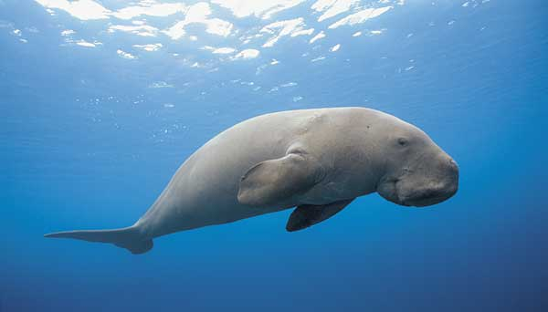
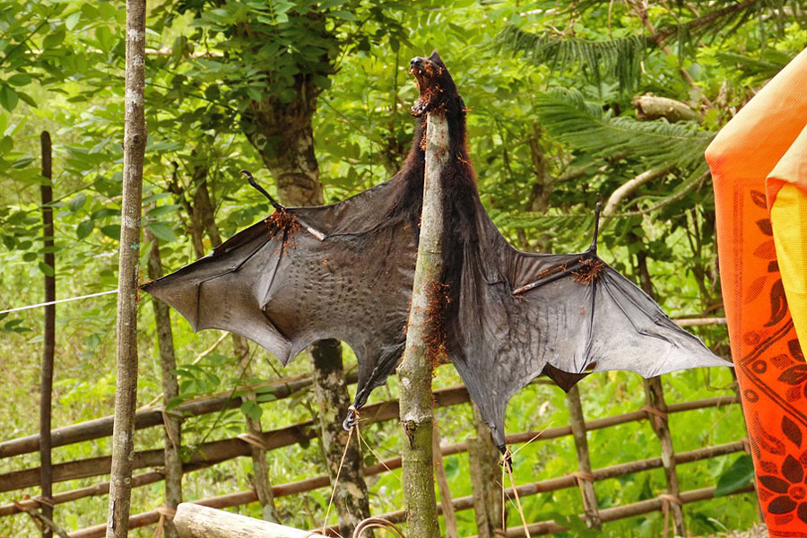

The dugong is a marine mammal. It is one of four living species of the order Sirenia, which also includes three species of manatees. It is the only living representative of the once-diverse family Dugongidae; its closest modern relative, Steller's sea cow (Hydrodamalis gigas), was hunted to extinction in the 18th century. The dugong is the only sirenian in its range, which spans the waters of some 40 countries and territories throughout the Indo-West Pacific. The dugong is largely dependent on seagrass communities for subsistence and is thus restricted to the coastal habitats which support seagrass meadows, with the largest dugong concentrations typically occurring in wide, shallow, protected areas such as bays, mangrove channels, the waters of large inshore islands and inter-reefal waters. The northern waters of Australia between Shark Bay and Moreton Bay are believed to be the dugong's contemporary stronghold.

Pteropus (suborder Yinpterochiroptera) is a genus of megabats which are among the largest bats in the world. They are commonly known as fruit bats or flying foxes, among other colloquial names. They live in South Asia, Southeast Asia, Australia, East Africa, and some oceanic islands in the Indian and Pacific Oceans.[3] There are at least 60 extant species in the genus.[4] Flying foxes eat fruit and other plant matter, and occasionally consume insects as well. They locate resources with their keen sense of smell. Most, but not all, are nocturnal. They navigate with keen eyesight, as they cannot echolocate. They have long life spans and low reproductive outputs, with females of most species producing only one offspring per year. Their slow life history makes their populations vulnerable to threats such as overhunting, culling, and natural disasters. Six flying fox species have been made extinct in modern times by overhunting. Flying foxes are often persecuted for their real or perceived role in damaging crops. They are ecologically beneficial by assisting in the regeneration of forests via seed dispersal. They benefit ecosystems and human interests by pollinating plants.